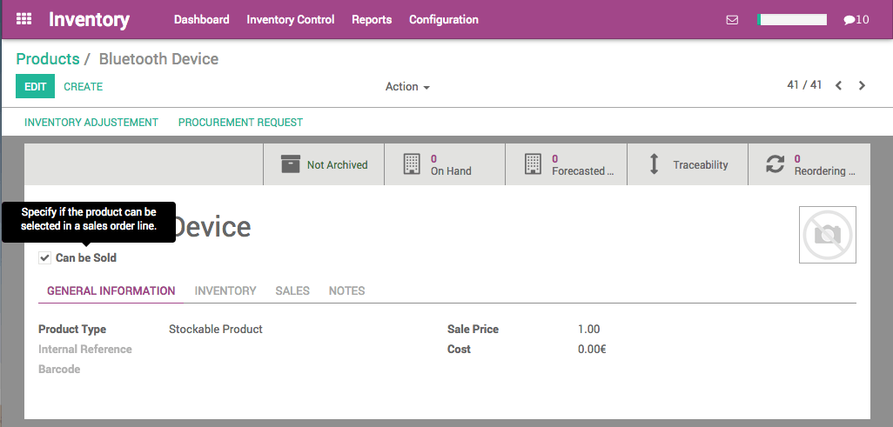
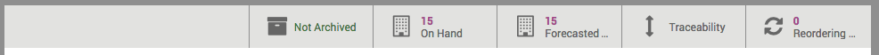
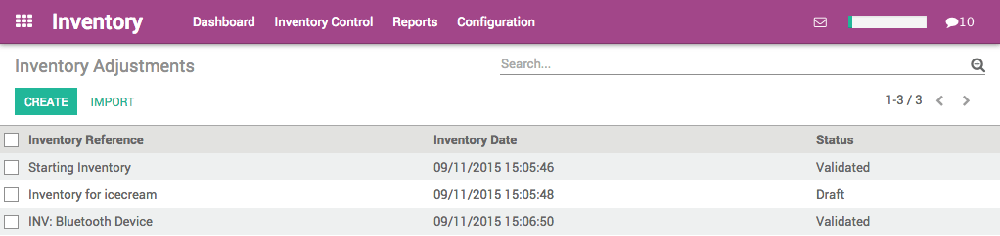
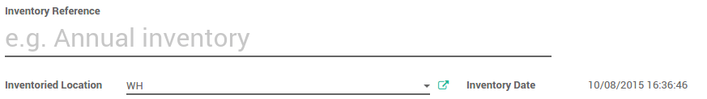
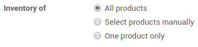

仓库管理系统的一个重要特性就是保持库存正确
一旦产品被定义好，就可以做库存的初始化了。你可以通过盘点库位中的存货来正确的管理存货数量。
产品配置
在存货模块下，打开 ，然后点击 创建 创建新的产品。把产品类型定义为 库存产品 ，不要定义为消耗品。
开始初始化化盘点
为一种产品更新产品数量
在刚刚创建的产品中，我们可以在上方的标题栏中看到产品在手数量是0。点击**更新在手数量**按钮
一个心窗口打开，在**最新在手数量**字段，输入当前库存中产品的数量，然后点击**应用**。

小技巧
如果使用仓库的多库位，你可以从这个界面设置产品的库位。
可以看到在手数量标签里面的数量已经变化了
现在，如果在**存货控制**菜单下点击**存货调整**，你会看到系统自动创建并确认了一个命名为"INV: (产品名称)"的行。
一次多个产品
创建所有你想要追踪产品库存的产品(作为库存类型的产品)。一旦产品在库存中产生需求，用期初盘点在系统中按照库位放置当前的数量。进入：[UNKNOWN NODE problematic]库存控制 --> 库存调整 [UNKNOWN NODE problematic]开始期初盘点。
给之命名(例如期初库存)并选择库存的存放库位。注意，当你选择了父库位(例如库存可以被分成不同的子库位),你也可以选择下级(或子)库位。
在盘点的时候你可以选择盘所有产品，部分产品或者只盘一个。在这种状况下，我们选择**所有产品**。
小技巧
如果你需要在不同是时间段进行库存你估值而不是只有在期末盘点时候在强制估值期间字段输入响应的会计期间。需要安装会计模块。
点击**开始盘点**按钮。基于选择的盘点类型(所有产品或者部分产品)可能你需要通过点击**添加条目**手工地添加产品
添加库存中每一个产品的**实际数量**。
小技巧
通过你激活一些选项之后额外的信息就会出现(多库位，序列号，代销库存)。

点击**确认盘点**按钮确认该次盘点并过账。
报表
检查当前的库存，进入:menuselection:[UNKNOWN NODE title_reference] ,并且点击 列表按钮 ：